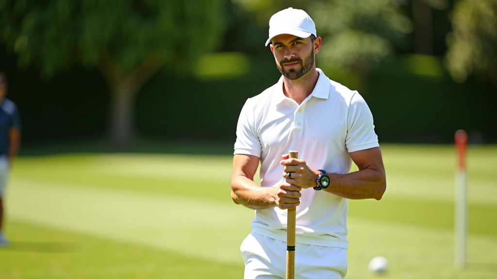
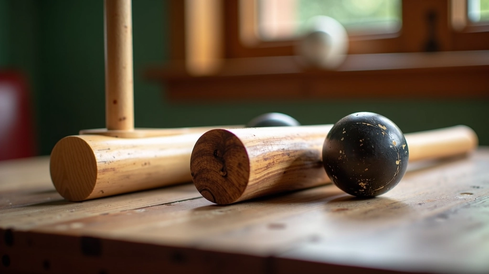
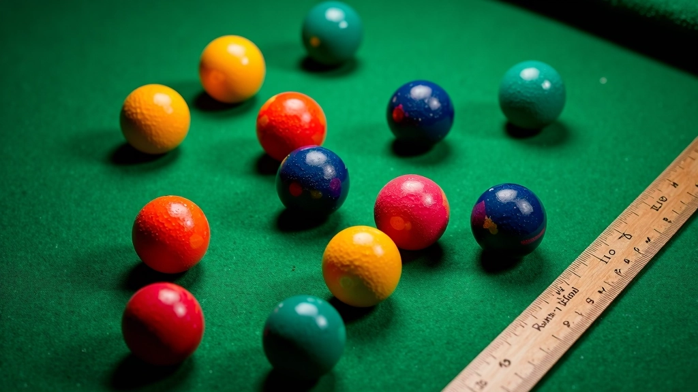
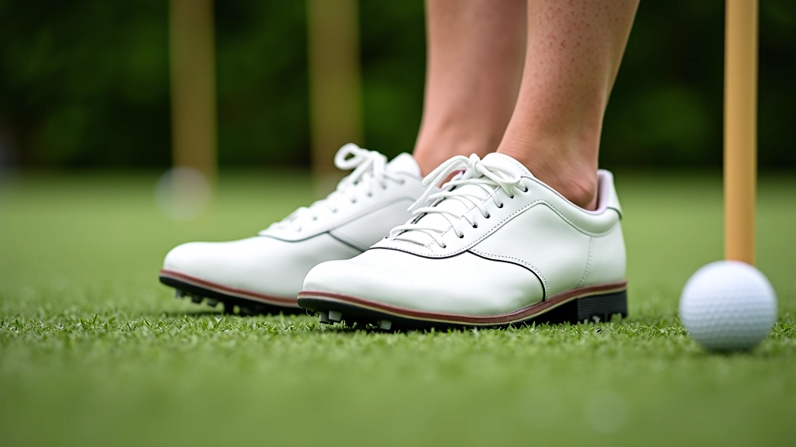
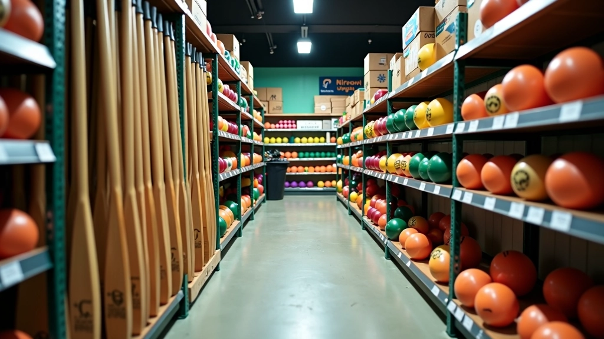

اختيار المعدات المناسبة
دليل شامل لاختيار المضرب والكرات والأحذية المناسبة لتحسين أدائك في الكروكيه


لماذا اختيار المعدات مهم جداً
المعدات الصحيحة تُحدث فرقاً كبيراً في لعبتك. لا يتعلق الأمر فقط بالأداء — إنه يتعلق بالشعور والثقة عندما تخطو إلى الملعب. سواء كنت مبتدئاً أو لاعباً متقدماً، فإن اختيار المضرب والكرات والأحذية المناسبة يمكن أن يحسّن تقنيتك بشكل ملحوظ.
الكروكيه ليس عن المعدات الغالية فحسب — إنه يتعلق بالاختيار الذكي. نحن هنا لنساعدك على فهم ما تحتاج إليه حقاً وكيفية العثور على القطع المناسبة لأسلوبك.


اختيار المضرب المناسب
المضرب هو أداتك الأساسية. يجب أن تشعر بارتياح عند الإمساك به. الوزن يتراوح عادة بين 800 إلى 1100 غرام، والطول حوالي 90 إلى 105 سنتيمترات.
رأس المضرب
يمكن أن يكون الرأس مصنوعاً من الخشب أو المعادن أو الحجر الجيري. الخشب الصلب مثل الكمثرى أو الدردار يوفر ضربة جيدة. المعادن أخف وزناً وأكثر متانة. اختر حسب أسلوب لعبك — هل تفضل القوة أم التحكم الدقيق؟
طول المضرب
الطول الصحيح يعتمد على طولك وراحتك. جرّب مضارب مختلفة — المضرب الصحيح يجب أن يسمح لك بضربة طبيعية وسلسة بدون انحناء مفرط.
التوازن
المضرب الجيد يجب أن يكون متوازناً. ارفعه بيدك — إذا كان ثقيلاً جداً من الرأس، سيكون من الصعب التحكم فيه. التوازن الجيد يعني أداء أفضل.
ملاحظة مهمة
هذا الدليل يقدم معلومات عملية تعليمية حول اختيار معدات الكروكيه. التوصيات هنا تستند إلى أفضل الممارسات والتجارب الشائعة. تذكر أن تجربة المعدات قبل الشراء دائماً أفضل ما يمكنك فعله — كل لاعب فريد والمعدات التي تناسبك قد لا تناسب شخصاً آخر.
الكرات: الجودة والمواد
الكرات المستخدمة في الكروكيه ليست عادية — يجب أن تكون ثقيلة وصلبة وموحدة الحجم. معظم الكرات المعتمدة يبلغ قطرها حوالي 3.6 سنتيمترات وتزن حوالي 560 غراماً.
الكرات المصنوعة من البلاستيك المقسى أو الخشب المغطى بالراتنج توفر أداءً موثوقاً. لا تشتري كرات رخيصة الثمن — الكرات ذات الجودة العالية تدوم أطول وتوفر لعبة أفضل. الفرق بين كرة جيدة وكرة رديئة ملحوظ جداً عندما تلعب.
نصيحة مهمة: اختبر الكرات قبل شرائها. يجب أن تشعري بنفس الثقل والقوة. كرة واحدة أخف قليلاً من الأخرى قد تؤثر على لعبتك.


الأحذية والملابس
لا تقلل من أهمية الأحذية الجيدة. تحتاج إلى أحذية توفر الاستقرار والراحة على العشب. أحذية الكروكيه عادة ما تكون بيضاء وتتميز بنعل مسطح وثابت.
ابحث عن أحذية بدعم كاف للكاحل وتصريف جيد للرطوبة — ستقضي ساعات على الملعب والراحة مهمة جداً. الملابس يجب أن تكون فضفاضة بما يكفي للحركة الحرة لكن احترافية المظهر. معظم الأندية لديها رموز اللباس — تحقق منها قبل الشراء.
- أحذية بيضاء أو فاتحة اللون
- نعل مسطح وغير زلق
- دعم جانبي جيد للكاحل
- مواد قابلة للتنفس
الإكسسوارات والمعدات الإضافية
بعد المضرب والكرات والأحذية، هناك عدد من الأشياء الإضافية التي تحتاجها:
حقيبة المعدات
حقيبة جيدة تحافظ على مضربك وكراتك آمنة. يجب أن تكون متينة وسهلة الحمل. حقيبة مع حماية داخلية توقي معدات من الخدوش.
الكرة الحاكمة
كرة إضافية تُستخدم في بعض الأشكال لقياس الفتحات. ليست ضرورية للجميع لكنها مفيدة للاعبين الجديين.
قفازات وحماية
بعض اللاعبين يستخدمون قفازات لتحسين الإمساك، خاصة في الطقس الرطب. واقي الشمس ضروري دائماً.
حامل الكرات
حامل معدني أو بلاستيكي يسهل نقل وتخزين كراتك. يبقيها منظمة وجاهزة للعب.
اختيار المعدات حسب الميزانية
لا تحتاج إلى إنفاق أموال ضخمة للبدء. هناك خيارات جيدة بأسعار معقولة. ركز أولاً على المضرب والكرات — هذان هما الأساس. يمكنك إضافة الأشياء الأخرى لاحقاً.
الاستثمار الجيد الآن سيوفر عليك المال لاحقاً. معدات رخيصة تحتاج إلى استبدال بسرعة. معدات متوسطة الجودة تدوم سنوات. ابحث عن الصفقات الجيدة — العديد من الأندية لديها معدات مستعملة بحالة جيدة.

الخطوات التالية
اختيار المعدات المناسبة هو بداية جيدة. لكن تذكر — أفضل معدات في العالم لن تحسّن لعبتك بدون التدريب والممارسة. ابدأ بمعدات جيدة لكن متوسطة، ثم ركز على تطوير تقنيتك.
تحدث إلى لاعبين آخرين في نديك. استعر بعض المضارب لتجربتها. لا تتسرع في الشراء. المعدات المناسبة تجعل اللعب أسهل وأكثر متعة — وهذا هو المهم حقاً.